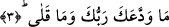

Ve’d-duha ay yüzlü Mustafa’nın yüzüne işârettir
Ve’l-leyl Mustafa’nın siyah saçı mânâsına gelir.
Öte yandan Cüneyd Bağdadi (k.s.) bu âyeti şöyle anlıyor: “Ve’d-Duha” şuhûd
makamıdır. “Ve’l-Leyli iza seca” ise ğayn makamıdır ki Peygamber Efendimiz (s.a.) bu
makama işâret olarak “Gerçekten benim kalbime gaflet çöktüğü oluyor”
1- Bundan önceki sûrede “gece”nin önce ifâde edilmesi onun asıl olmasından
dolayıdır, çünkü gündüz fecrin doğmasıyla meydana gelir. Güneşin batması ile de hava
eski aslî hâline geri döner. Bundan dolayı şu âyette “zulmet” kelimesi önce
zikredilmiştir. Allah şöyle buyurur: “Hamd, gökleri ve yeri yaratan, karanlıkları ve
aydınlığı var eden Allah’a mahsustur.” (En’am, 6/1) Gündüzün önce söylenmesi
ondaki zâtî ve ârızî şereften dolayıdır. Burada şöyle bir soru sorulabilir: “Kuşluk vakti
bir günün belli bir bölümü iken neden gün adına sâdece kuşluk vakti zikredilirken gece
tümüyle zikrediliyor?” Bu soruya şöyle cevap verilmiştir: Kuşluk vakti bir günün belli
bir bölümü ise de fakat bütün geceye karşılık gelir, tıpkı Hz. Peygamber (s.a.)
Efendimiz’in bütün peygamberlere mukabil olması gibi. Öte yandan gündüz sevinç ve
rahat vaktidir. Gece ise yalnızlık, gam ve keder vaktidir. Burada şöyle ince bir nükte
daha vardır o da şudur; dünyanın gam ve kederi sevinçlerinden daha fazladır. Çünkü
kuşluk vakti bir günün belli bir bölümüdür. Oysa gece bir an değil bir çok anları
bünyesinde toplayan bir süreçtir.
Rivâyet olunur ki Allah arşı yarattığı zaman orayı sağ tarafında kapkara bir bulut
kümesi gölgeler ve “ne yağdırayım?” diye seslenir. Bu bulut kümesine “tam yüz sene
gam, keder ve hüzün yağdır” diye cevap verilir, sonra bu kapkara bulut dağılır.
Kendisine bir kez daha bu emir verilir ve böylece tam üçyüz sene gam ve keder
yağdırılır. Bunun ardından arşın sağ tarafına bembeyaz bir bulut kümesi gelir ve arşın
sağını gölgeler. Bu bulut kümesi de aynı şekilde “ne yağdırayım?” diye seslenir.
Kendisine; “bir an sevinç yağdır” diye cevap verilir. İşte bundan dolayı gam, keder ve
hüzün süreklidir, çoktur. Sevinç ise az ve nadirdir.
3. Rabbin seni bırakmadı ve sana darılmadı.
“Rabbin seni bırakmadı” Bu ifâde yukardaki kasemle pekiştirilen hükümdür.
“Tevdi’” vedanın abartılısıdır. Anlamı terketmek, bırakmak demektir. Çünkü veda eden
kimse karşısındaki kişiden ayrılıyor demektir ancak “veddea” ifâdesi kullanılıyorsa o
zaman ayrılan kimse ayrılışta mübalağa ediyor demek olur. Veda bilindiği üzere
ayrılmayı bildirmek demektir.
Rağıb Isfahânî’nin ifâdesine göre “tevdi’” kökünün aslı “eddea”dır. Bu kök